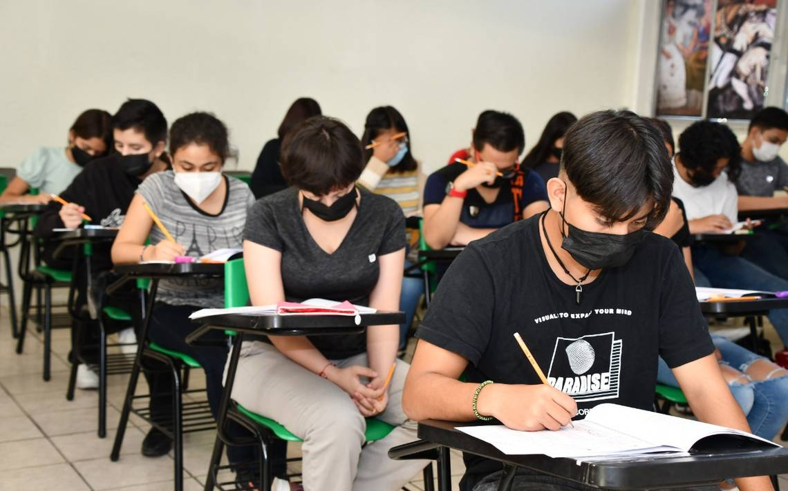

Registro
 El registro inicia el 5 de marzo y termina el 16 de mayo se realiza en la plataforma web PAEMS; el aspirante necesitará crear un asuario y una constraseña.
-
Para crear una cuenta:
- Aspirantes que estudiantes en el Estado de Quintana Roo deberán contar con correo electronico, CURP Y matrícula.
- Aspirantes que estudiaron en otros estados deberán contar con correo electronico, CURP y matrícula.
- Aspirantes extranjeros unicamente su nombre completo, fecah de nacimiento y correo electronico.
Etapas
- Crear e ingresar a la cuenta y elegir los planteles deseados para estudiar.
- Imprimir la fecha y realizar el pago del examén ($200).
- Imprimir el pase al examén.
- Realizar el examén el 16 de junio.
- Revisar la pubicaión de los resultados el 16 de julio.